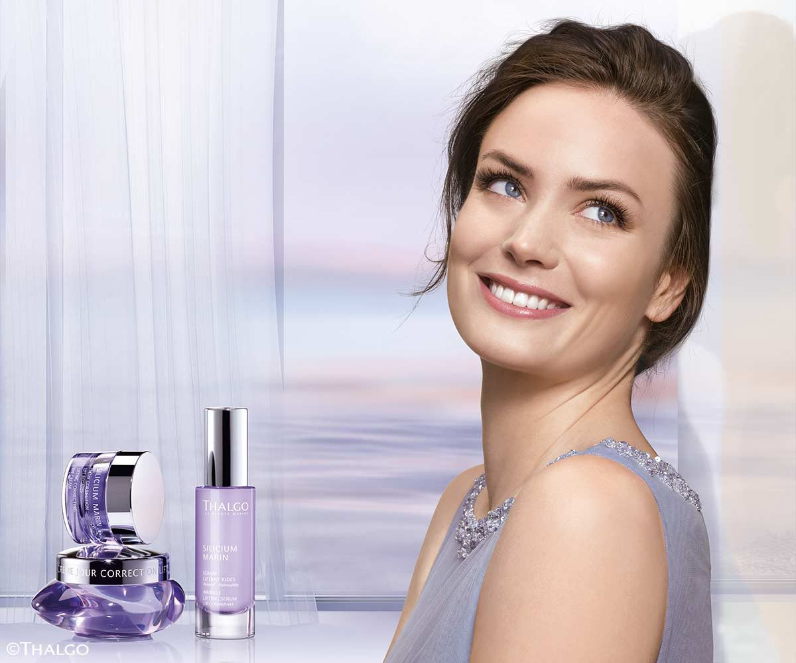
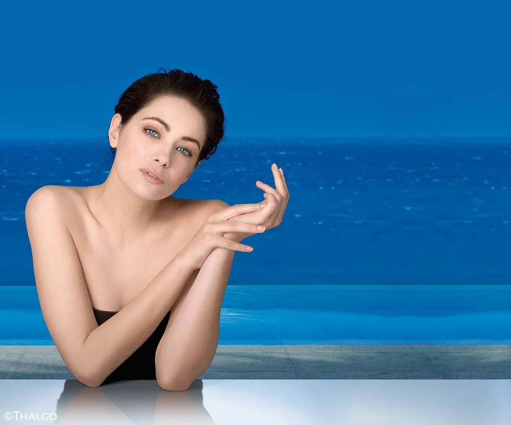

Die Pflegekonzepte von THALGO basieren auf maritimen Algenextrakten – leistungsstarke Wirkstoffe aus den Tiefen des Meeres, die Ihre Haut in aller Ruhe aufnimmt.
Spezialbehandlung gegen sichtbare Falten und schlaffe Haut. Die effizienten Wirkstoffe bekämpfen Hauterschlaffungen und lassen die Haut wie „geliftet“ aussehen. Eine modellierende Doppel-Maske mit Sofort-Effekt definiert das Gesichtsoval neu.
TerminanfrageSpezialbehandlung mit kühlendem, abschwellendem Effekt für sensible, empfindliche, couperose Haut. Menthol und Pfefferminzöl wirken stärkend und lassen Schwellungen abklingen.
TerminanfrageDer exklusive Wirkstoff Sève Bleue wird aus süßem Meeresquellwasser gewonnen und ist reich an Spurenelementen und Mineralien. Schützt zuverlässig vor Feuchtigkeitsverlust.
Terminanfrage
Ein prickelnder Mix aus Meersalz und Mineral-Gel befreit den Körper von abgestorbenen Hautzellen. Anschließend entspannen Sie bei einer Ganzkörper-Öl-Massage.
TerminanfrageKühle Wickel, getränkt mit einer Algen-Kampfer-Menthol-Lösung, unterstützen die Fettverbrennung bei Cellulite und wirken lindernd bei müden Beinen.
Terminanfrage